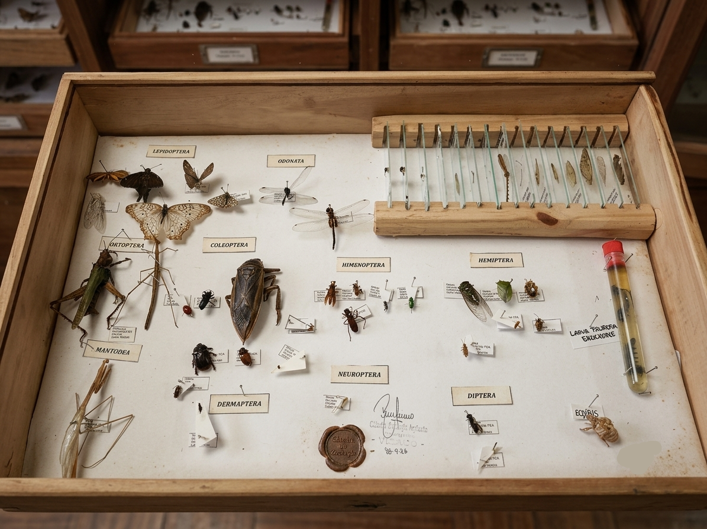
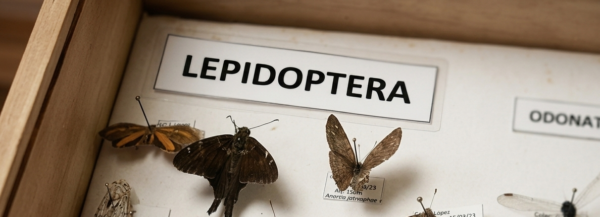
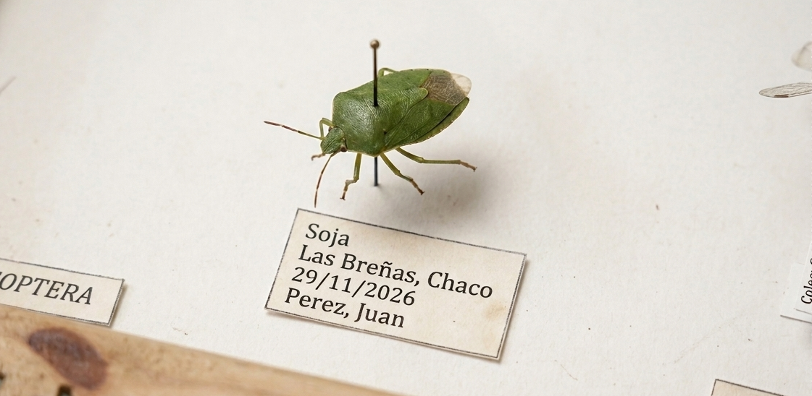
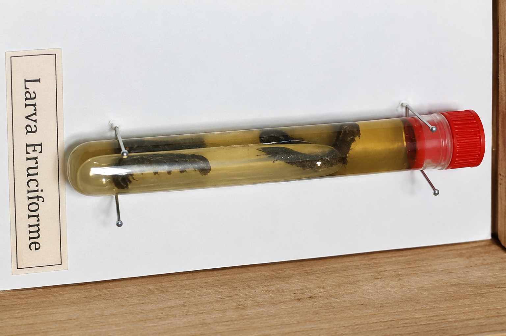
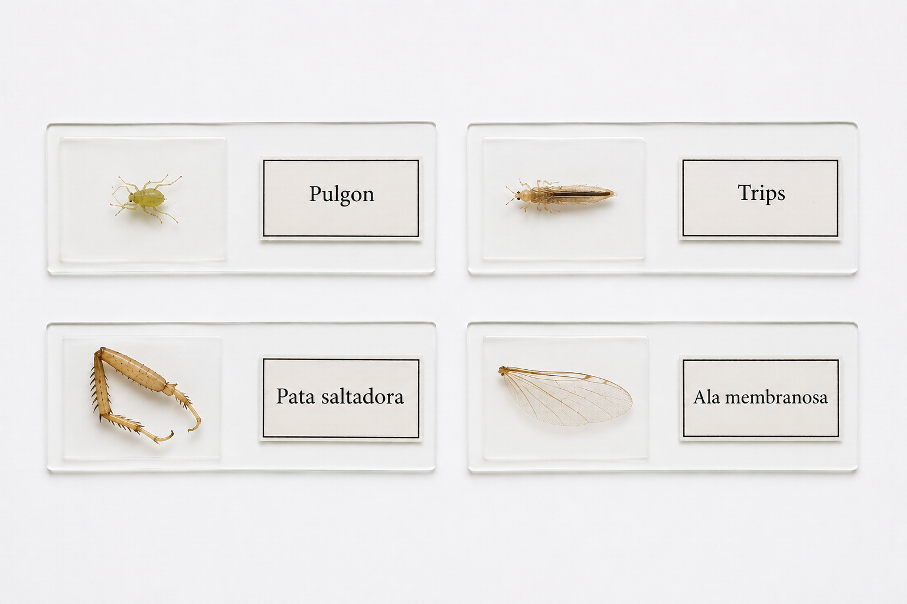

Guía práctica
¿Cómo armar correctamente una caja entomológica?
La imagen muestra un ejemplo de una caja entomológica estándar utilizada por los estudiantes de Ingeniería Agronómica. Si bien la distribución de los insectos y la ubicación de las diferentes secciones pueden variar según el diseño de cada caja, al momento de presentarla deben estar presentes tres partes fundamentales.

Los órdenes de insectos
Cada estudiante podrá recolectar una cantidad y diversidad diferente de insectos. Sin embargo, todos los ejemplares pertenecen a un orden determinado y, por lo tanto, deben organizarse dentro de la caja según su clasificación taxonómica.
Por ejemplo, si se recolectaron cinco mariposas o polillas, todos los ejemplares deberán ubicarse bajo una etiqueta general con el nombre del orden LEPIDOPTERA. Del mismo modo, si se recolectaron seis chinches, deberán agruparse bajo una etiqueta general denominada HEMIPTERA, y así sucesivamente con los demás órdenes.
Además, es importante que cada insecto cuente con su propia etiqueta de identificación. En las sucesivas clases prácticas se abordarán los criterios necesarios para clasificar y montar correctamente los diferentes grupos de insectos.
En las imágenes siguientes se puede observar la ubicación de la etiqueta general correspondiente al orden y la etiqueta individual de cada ejemplar.


La larva
El reconocimiento de las diferentes etapas del ciclo de vida de los insectos constituye una parte fundamental del aprendizaje. En los insectos con metamorfosis completa, como los LEPIDOPTERA, COLEOPTERA y DIPTERA, el estadio juvenil recibe el nombre de larva.
Muchas larvas son consideradas plagas de importancia agrícola. Por este motivo, al momento de presentar la caja entomológica, deberá incluirse al menos una larva.
La larva se conservará en un tubo que será entregado junto con la caja. Dentro del tubo deberá colocarse el líquido de conservación que estará disponible durante las clases prácticas. Posteriormente, el tubo deberá ubicarse en algún sector de la caja entomológica.
A diferencia de los insectos montados, para esta sección no será necesario incluir etiquetas con el orden taxonómico, el lugar de recolección u otros datos. El único requisito será identificar el tipo de larva. Por ejemplo:
- Larva eruciforme
- Larva limaciforme
- Larva campodeiforme
La identificación de los diferentes tipos de larvas se abordará y desarrollará durante las clases prácticas.

Los preparados
Durante las sucesivas clases prácticas se realizarán diferentes preparados microscópicos sobre portaobjetos. Estos montajes permitirán observar en detalle estructuras pequeñas de los insectos que son difíciles de apreciar a simple vista.
Se podrán realizar preparados de insectos completos, como pulgones o trips, o de estructuras específicas, tales como:
- Aparatos bucales
- Patas
- Alas
- Antenas
- Otras estructuras de interés
Todos los preparados deberán conservarse dentro de la caja entomológica, en una sección destinada específicamente a los portaobjetos.
Debido a que muchas cajas entomológicas se utilizan y se transfieren entre diferentes generaciones de estudiantes, algunas ya cuentan con un soporte de madera diseñado para colocar los portaobjetos. En estos casos, solo será necesario ubicar los preparados en los espacios correspondientes.
Sin embargo, la mayoría de las cajas no dispone de esta sección. Por lo tanto, cada estudiante deberá confeccionarla y ubicarla en el sector de la caja que considere más adecuado.
La elaboración del soporte es sencilla. Puede realizarse utilizando una o dos tiras de tergopol, en las cuales se deberán efectuar pequeños cortes para insertar y mantener los portaobjetos en posición. A continuación, se presentan dos opciones para organizar esta sección:

RECOMENDACIONES:
- Mantené los ejemplares bien fijados con alfileres entomológicos, sin que se muevan dentro de la caja.
- Ordená los ejemplares por orden, con etiquetas claras de identificación (fecha, lugar y nombre científico).
- Revisá que no haya humedad, hongos o partes rotas antes de presentar la caja.
- Retirá cualquier ejemplar deteriorado y reemplazalo si es posible, en lugar de dejarlo incompleto.
- Presentala limpia y prolija: una caja bien cuidada suma en la instancia de examen final.